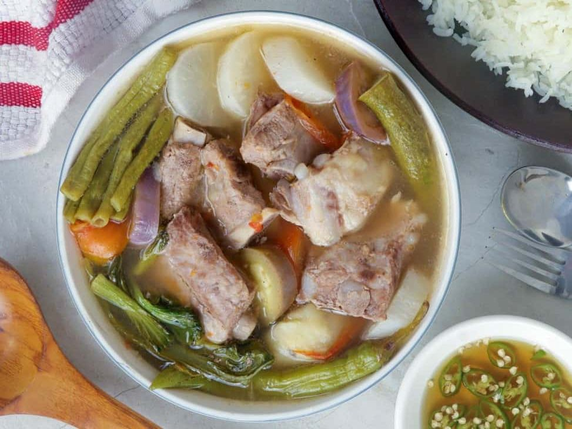

SINIGANG
SINIGANG
Sinigang is a classic Filipino soup characterized by its sour and savory medley of flavors. It's popular comfort food in the Philippines, usually served on its own or paired with steamed rice on rainy days to ward off the cold. Like adobo, the term sinigang describes a cooking method more than a particular dish, as it has many variations. It can be made with protein such as pork, fish, shrimp, beef, and chicken and souring agents such as tamarind, guava, green mango, calamansi, kamias, batuan, santol, and other native fruits. A mix of tender meat, fresh spinach, string beans, and tomatoes, as well as a dash (or more) of savory fish sauce, make for the perfect combination in simmering and incorporating each unique flavor with each other. Powerful and poignant, sinigang is a Filipino native, through and through. Its name, sinigang, originates from the Tagalog verb that directly translates to “to stew” — sigang! Because of its Tagalog name, many presume it to be Tagalog in origin as well. This yummy meal has relatives in other regions in the country as well, to be sure — yet none are quite like this classic soup that many have fallen in love with. Again, sinigang isn’t a dish so much as it is a cooking method. This is why, like we mentioned earlier, there are a wide number of variations of this delicious dish! These include your sinigang na hipon, a favorite seafood variant. Here, tender and fresh shrimp soak up all the vibrant flavors of your beloved stew. It’s important to keep your shrimp perfectly cooked, so it’s much easier to peel the skin off later on.
Ingredients
- Pork
- -while you can use meatier and leaner parts such as pork shoulder (kasim), I recommend bony cuts such as spare ribs, pork belly with ribs, hocks, knuckles, and tailbone or neck bones for better flavor.
- Tomatoes
- - use ripe, juicy tomatoes
- Onion
- -peeled and quartered
- Fish sauce
- - brings umami flavor; you can swap it with salt if you prefer
- Gabi
- - adds a starchy component to the dish and thickens the broth
- Radish
- - locally known as labanos. It has an elongated and oblong root which is white in color.
- Vegetables
- - the recipe uses sitaw (long beans), eggplant, okra, and bok choy, but feel free to include other local produce available such as kangkong (water spinach) and pechay
- Tamarind
- - can be fresh pods, paste, or powder mixes
- Banana or finger chili peppers (siling haba)
- -adds a mild heat; optional and can be omitted
Prepare
- 2 pounds pork spare ribs, cut into 2-inch pieces
- 8 cups water
- 2 large tomatoes, quartered
- 1 medium onion, peeled and quartered
- 2 tablespoons fish sauce
- 6 pieces gabi, (peeled and halved depending on size)
- 1 6-inch radish (labanos), peeled and sliced to ½-inch thick half-rounds
- 2 finger chilies (siling haba)
- ½ bunch long beans (sitaw), ends trimmed and cut into 3-inch lengths
- 1 eggplant, ends trimmed and sliced to ½-inch thick half-rounds
- 6 pieces okra, ends trimmed
- 15 pieces large tamarind or 1 ½ (1.41 ounces each) packages tamarind base powder
- salt and pepper to taste
- 1 bunch bok choy or pechay, ends trimmed and separated into leaves
Instructions
- Rinse pork ribs and drain well.
- In a pot over medium heat, combine pork and enough water to cover. Bring to a boil, skimming scum that accumulates on top.
- Once broth clears, add tomatoes, onion, and fish sauce. Lower heat and simmer for about 1 to 1 ½ hours or until meat is tender, adding more water as necessary to maintain about 8 cups.
- Add gabi and cook for about 4 to 6 minutes or until tender.
- Add chili peppers and radish. Continue to simmer for about 2 to 3 minutes.
- Add long beans. Continue to cook for about 2 minutes.
- Add eggplant and okra and cook for another 1 to 2 minutes.
- If using packaged tamarind base, add to the pot and stir until completely dissolved.
- Season with salt and pepper to taste.
- Add bok choy and continue to cook for about 1 minute. Serve hot.

Source: https://www.kawalingpinoy.com/sinigang-na-baboy
<--Programmer : Jerwin L. Zamora-->